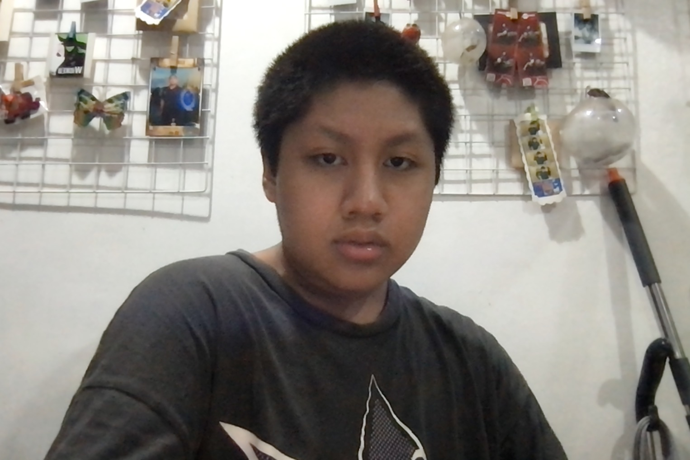

ICT 10 Q2 Project
Homepage (Seatwork 1)
Element Checker (Skills Test)
School Club Members (Drill 2)
Meet the Creator

Meet the Creator
Grade 10 - Fairview | OB Montessori Center
Reveal a Fun Fact About Me